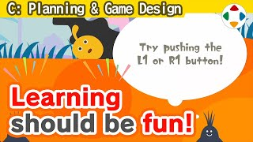
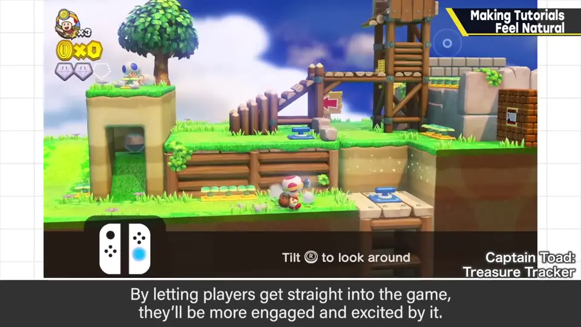
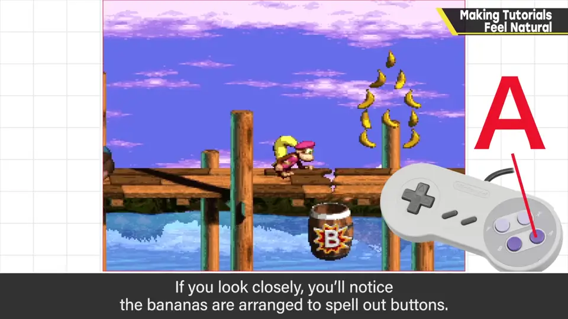
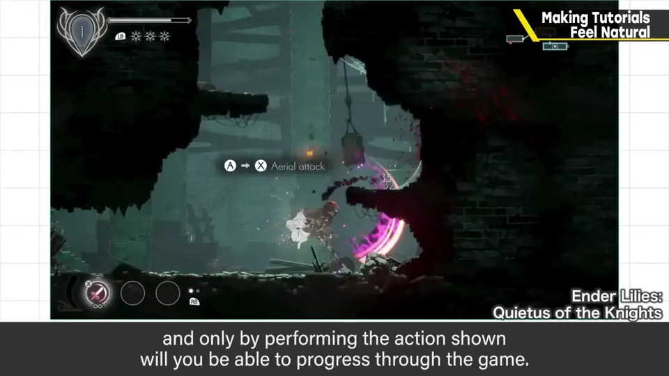
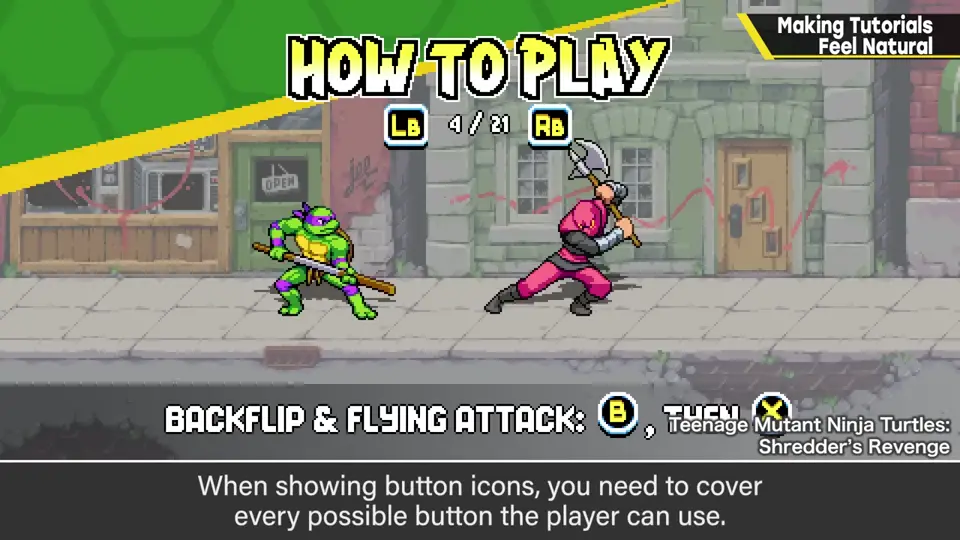
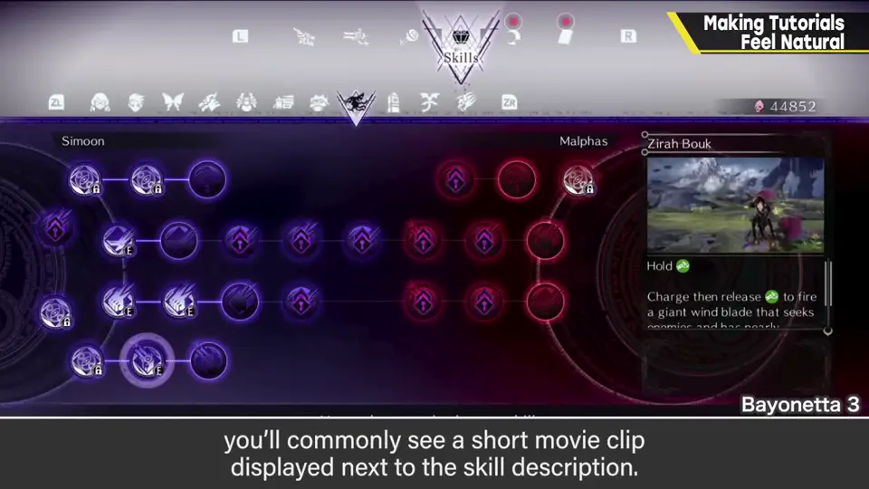
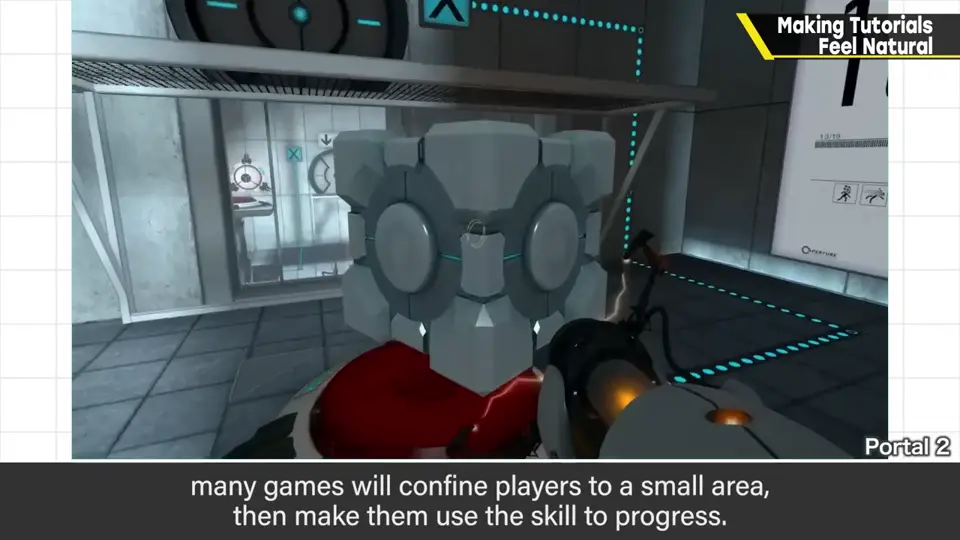

速览
教程就是还不熟悉操作阶段的操作指南，现在的游戏不可或缺，相关诀窍也已相当成熟。「一个明显的练习场、跟无机物对打」已成少数派；作为游戏导入，最好直接投入实战、边打边学——既满足「快让我玩」，也能调动情绪。教程历史悠久，至少 90 年代就很盛行：《超级大金刚 3》第一关的背景里有按钮形状的香蕉，按下该按钮就能做出合适的动作，不过可能不太容易察觉。最近横版动作游戏常是前进到某处写着操作，照做才能继续；信息可能直接写在墙上、按钮查看、或以 UI 显示。无论哪种，显示视觉操作指引时还必须对应按键设置（key config），挺麻烦：把按钮图标化就得涵盖所有按钮。获得新技能时的教程常用说明文 + 小视频；也有可试用即将获得技能的，但可能与制作工作量不成比例——不得不插入读取，结果也未必被多玩。移动类技能常见的做法是把玩家关在狭窄处，不用该技能就过不去。最终只要玩家懂得操作就行，但既然如此最好演出得有趣：别让教程变成作业或拖慢导入，尽量把它融入游戏之中。
1. 直接投入实战 0:04
教程，就是玩家还不熟悉操作时的操作指南。如今的游戏不可或缺，相关诀窍也已经相当成熟。
「一看就是练习场的关卡，让你和无机物对打」——这种做法已经成了少数派。

2. 教程的历史：《超级大金刚 3》 0:48
教程历史悠久，至少 90 年代就很盛行。《超级大金刚 3》第一关仔细看背景，会发现用香蕉摆成了按钮的形状，按下那个按钮就能做出当场合适的动作——不过可能不太容易注意到。

3. 视觉操作指引 1:06
最近的横版动作游戏，常是前进到某处写有操作说明，做出该操作才能继续。信息有直接写在墙上的、按按钮查看的、以 UI 显示的等等。


不管哪种，显示视觉操作指引时还得对应按键设置，相当麻烦：如果把按钮做成图标，就必须涵盖全部按钮。
4. 新技能的教程 1:47
获得新技能时，多用说明文 + 小视频展示。


- 也有让玩家试用即将获得技能的，但可能与制作工作量不相称：不得不插入读取，结果又没有想象中那么多人玩。
- 移动类技能常见的做法：把玩家关在狭小的地方，不用这个技能就过不去。
自测题
1. 为什么最好让玩家直接投入实战来学操作？
既满足玩家想快点玩的心情，也能调动情绪；无机质的练习场已是少数派。 0:30
2. 《超级大金刚 3》第一关是怎样做教程的？
背景里用香蕉摆成按钮形状，按下对应按钮就能做出合适的动作。 0:52
3. 显示按钮图标式操作指引时有什么麻烦？
必须对应按键设置，需涵盖所有按钮的图标。 1:36
4. 移动类技能常用的教程手法是？
把玩家关在狭小区域，不使用技能就无法前进。 2:18